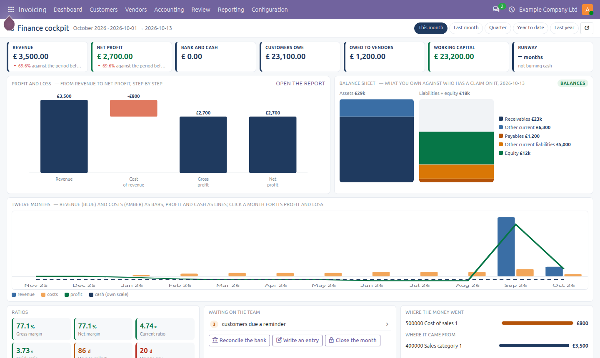
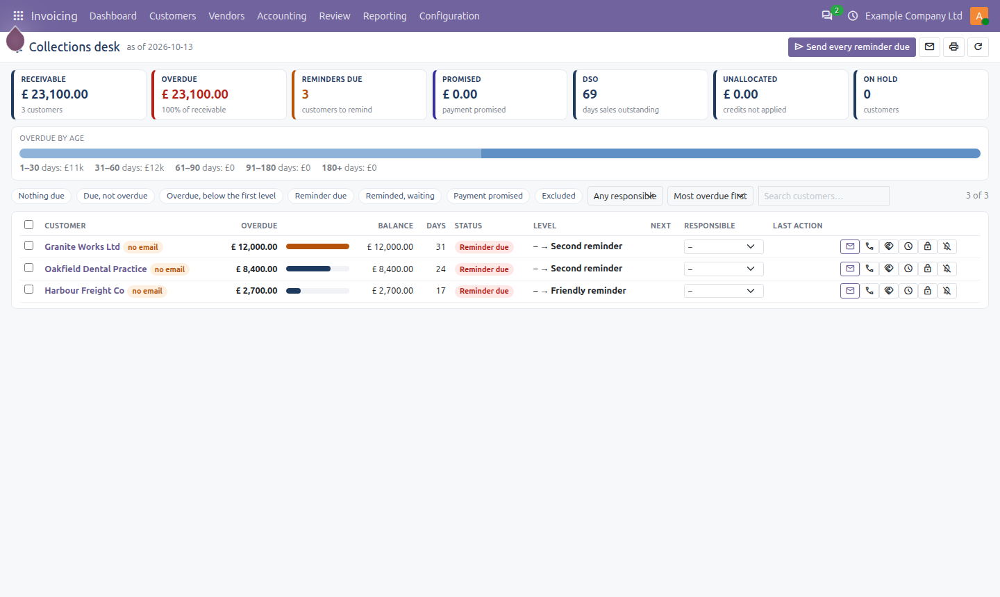
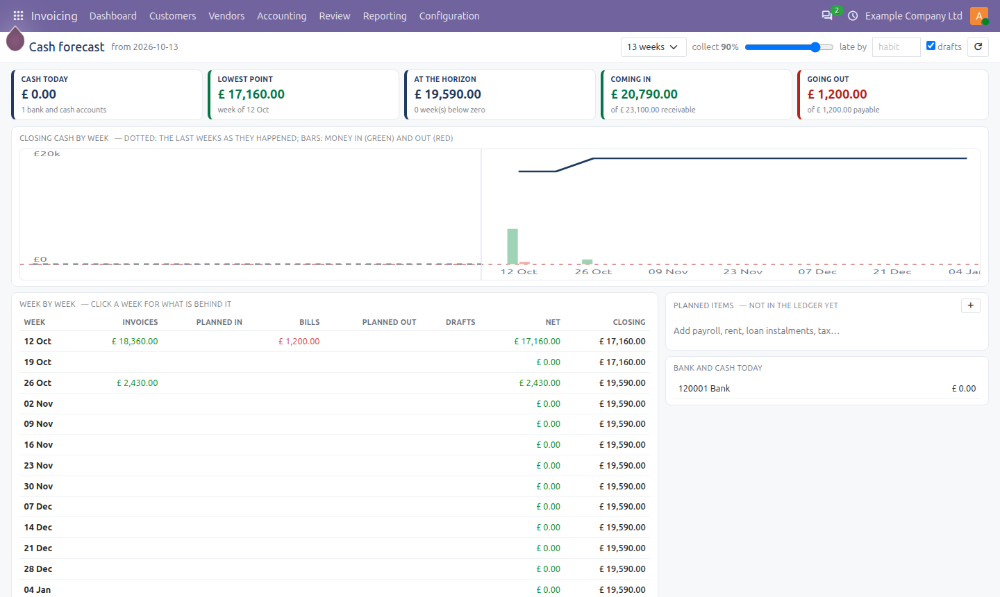

Everything the accounting team does after the entries are booked, on screens that sit inside the Accounting app: collections, matching, bank reconciliation, entry studio, budgets, deferrals, close cockpit, cash forecast, ledger health and a finance cockpit.
The profit and loss as a waterfall, the balance sheet as two stacks, twelve months of trend, banker's ratios and the work waiting on the team.

Follow-up levels, promise-to-pay, call log and reminders with the statement and the invoices attached, sent from your company address; days to pay per customer. Nothing is e-mailed automatically until you mark a level automatic.

From open items, planned items and history, with what-if sliders.

Matching desk (open items paired by amount, reference or sum, with a confidence score); bank reconciliation by pasting the statement, with rules and a reconciliation statement at any date; entry studio for journal entries typed like a spreadsheet; budgets with a board and Budget vs Actual; deferrals from invoice lines; a close cockpit that sets the lock date; and a nightly ledger health scan.
Odoo 20.0 Community; depends on Accounting, Dynamic Financial Reports and Assets and Depreciation. Screenshots use fictional sample data. OPL-1, © Ebshel Technologies.